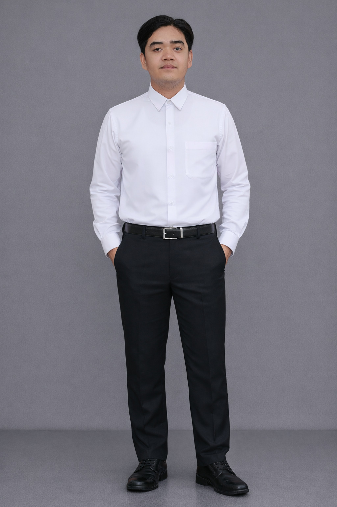

Selamat Datang di Website Saya
Ini adalah contoh header dengan dua kolom. Kolom kiri berisi teks seperti ini.
Pelajari Lebih Lanjut

About Me
A brief introduction about myself
Full Name: Dwiponco Suripto
Education: S1 Teknologi Informasi
Pekerjaan: Fresh Graduate
Contact: 081279306116
Hobi: Gaming
Alamat: Yogyakarta
Portofolio

Sistem Website Portal Informasi Kabupaten OKU Timur
Proyek pembuatan website portal informasi untuk Kabupaten OKU
Timur. Merupakan tugas magang dan sekaligus tugas akhir.

My Inventaris
Proeyek Pibadi pembuatan aplikasi inventaris barang menggunakan
PHP dan MySQL. Menggunakan framework Laravel 12 + Tailwind CSS.

Website Kost Oemah Putri UMY
Website frontend untuk kost Oemah Putri UMY yang menampilkan
informasi kamar, fasilitas, dan kontak.

Portofolio
Deskripsi proyek pribadi website portofolio dibangun dengan Next
JS dan Tailwind.